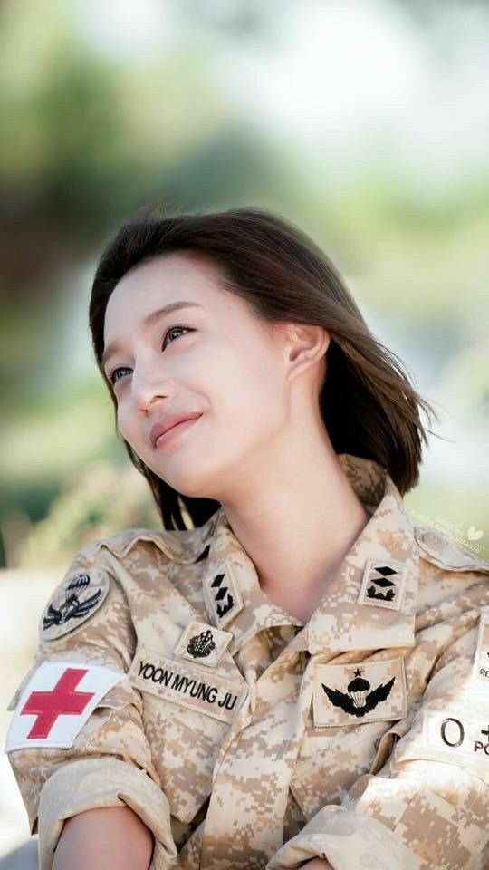
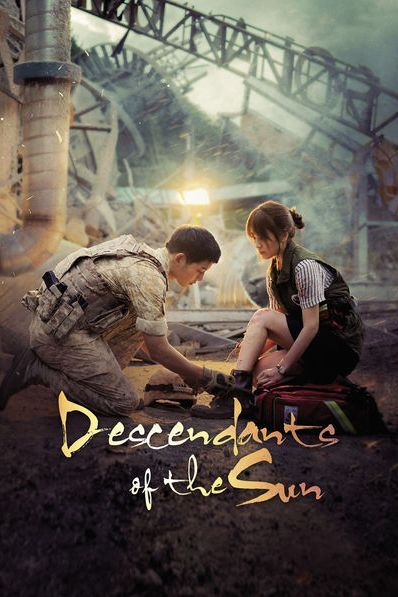

Pemeran Utama

Song Joong-ki
Sebagai Yoo Si-jin
Song Hye-kyo
Sebagai Kang Mo-yeon
Jin Goo
Sebagai Seo Dae-young

Kim Ji-won
Sebagai Yoon Myung-joo

Descendants of the Sun adalah drama Korea populer tahun 2016 yang menceritakan kisah cinta antara seorang tentara pasukan khusus, Kapten Yoo Si-jin, dan seorang dokter, Kang Mo-yeon. Drama ini memadukan aksi, romantis, dan kemanusiaan dengan latar perang dan bencana. DOTS menceritakan kisah cinta antara Kapten Yoo Si-jin, seorang tentara pasukan khusus, dan Dokter Kang Mo-yeon, seorang dokter bedah, yang berjuang membangun hubungan di tengah misi kemanusiaan dan situasi konflik di negara asing bernama Urk.
Lihat Pemeran
Sebagai Yoo Si-jin
Sebagai Kang Mo-yeon
Sebagai Seo Dae-young

Sebagai Yoon Myung-joo
Drama ini bikin baper banget! Chemistry Song Joong-ki & Song Hye-kyo luar biasa.
OST DOTS 2016 sampai sekarang masih jadi playlist favorit saya.
DOTS sekarang masih jadi drakor favorit saya (tahta tertinggi)
Saya sangat suka dengan alur cerita DOTS yang sangat bagus serta pengambilan kamera yang sangat bagus.
Gabung komunitas pecinta DOTS atau hubungi kami untuk info lainnya.